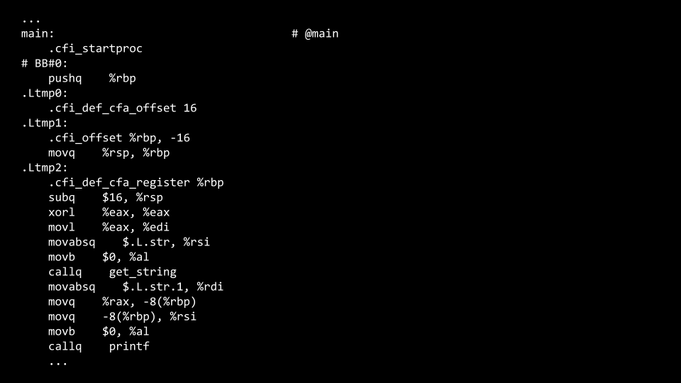
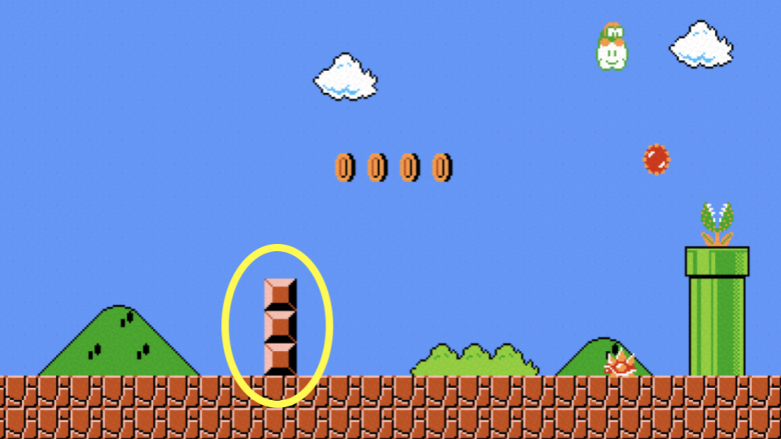
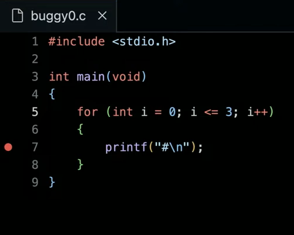
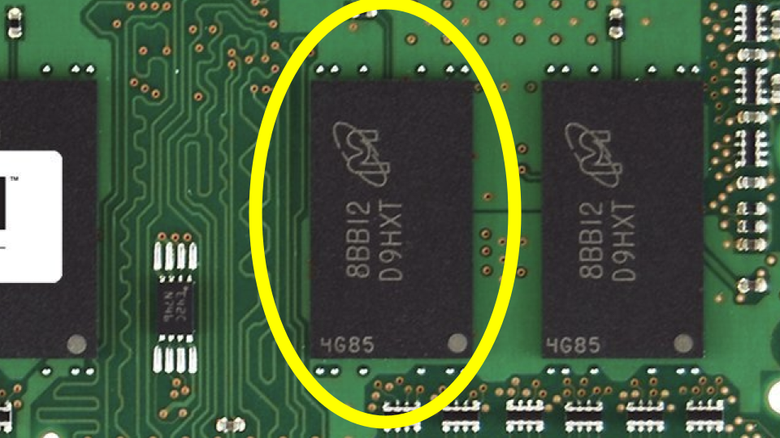
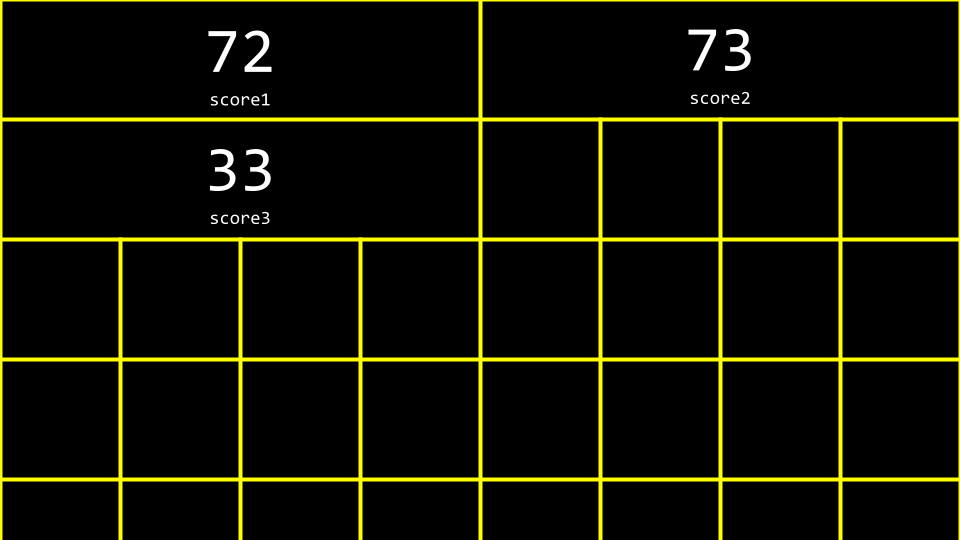
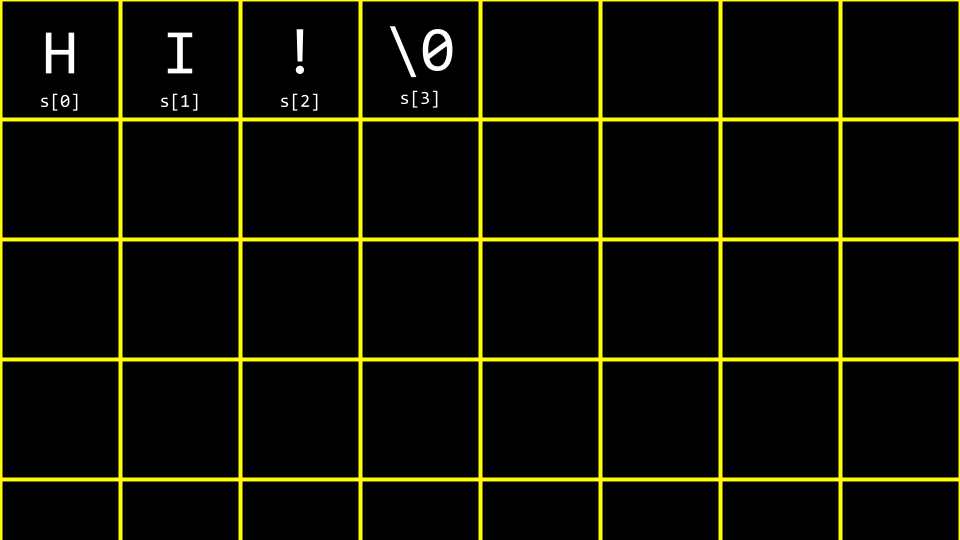
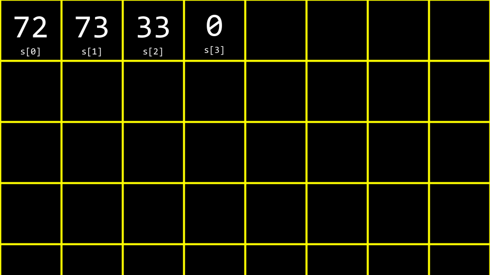

Week 2
Preprocessing. Compiling. Assembling. Linking. Debugging. Arrays. Strings. Command-Line Arguments. Cryptography.
- Shorts
- Problem Set 2
Notas
- Bem-vindo!
- Compilação
- Depuração
- Arrays
- Strings
- Argumentos da linha de comando
- Status de saída
- Criptografia
- Resumindo
Bem-vindo!
- Na nossa sessão anterior, aprendemos sobre C, uma linguagem de programação baseada em texto.
- Nesta semana, vamos dar uma olhada mais profunda em blocos de construção adicionais que irão apoiar nossos objetivos de aprender mais sobre programação desde o início.
- Fundamentalmente, além do essencial da programação, este curso trata de resolução de problemas. Consequentemente, também nos concentraremos ainda mais em como abordar problemas de ciência da computação.
Compilação
- Encryption é o ato de esconder texto simples de olhos curiosos. Decryption, então, é o ato de pegar um texto criptografado e retorná-lo para uma forma legível por humanos.
-
Um texto criptografado pode parecer com o seguinte:
- Lembre-se que na semana passada você aprendeu sobre um compilador, um programa de computador especializado que converte código fonte em código de máquina que pode ser entendido por um computador.
-
Por exemplo, você pode ter um programa de computador que se parece com isto:
#include <stdio.h> int main(void) { printf("hello, world\n"); } -
Um compilador irá pegar o código acima e transformá-lo no seguinte código de máquina:

- VS Code, o ambiente de programação fornecido a você como estudante CS50, utiliza um
compilador chamado
clangou linguagem C. - Se você digitar
make hello, ele executa um comando que executa o clang para criar um arquivo de saída que você pode executar como usuário. - O VS Code foi pré-programado de forma que o
makeexecute vários argumentos de linha de comando juntamente com o clang para sua conveniência como usuário. -
Considere o seguinte código:
#include <cs50.h> #include <stdio.h> int main(void) { string name = get_string("What's your name? "); printf("hello, %s\n", name); } - Você pode tentar entrar na janela do terminal:
clang -o hello hello.c. Você receberá um erro que indica que o clang não sabe onde encontrar a bibliotecacs50.h. - Tentando compilar novamente este código, execute o seguinte comando na janela do terminal:
clang -o hello hello.c -lcs50. Isso permitirá que o compilador acesse a bibliotecacs50.h. - Executando na janela do terminal
./hello, seu programa será executado como pretendido. - Embora isso seja oferecido como uma ilustração, para que você possa entender mais
profundamente o processo e o conceito de compilar código, usar
makeno CS50 é perfeitamente aceitável e esperado! - Compilar envolve etapas importantes, incluindo as seguintes:
- Primeiro, a pré-processamento é onde os arquivos de cabeçalho em seu código,
designados por um
#(como#include <cs50.h>) são efetivamente copiados e colados em seu arquivo. Durante esta etapa, o código decs50.hé copiado para o seu programa. Da mesma forma, assim como seu código contém#include <stdio.h>, o código contido emstdio.hem algum lugar do seu computador é copiado para o seu programa. Esta etapa pode ser visualizada da seguinte forma:
... string get_string(string prompt); int printf(string format, ...); ... int main(void) { string name = get_string("What's your name? "); printf("hello, %s\n", name); }-
Em segundo lugar, a compilação é onde seu programa é convertido em código de montagem. Este passo pode ser visualizado da seguinte forma:

-
Em terceiro lugar, o montagem envolve o compilador convertendo seu código de montagem em código de máquina. Este passo pode ser visualizado da seguinte forma:

-
Finalmente, durante o passo de vinculação, o código de suas bibliotecas incluídas também é convertido em código de máquina e combinado com seu código. O arquivo executável final é então gerado.

Depuração
- Todos vão cometer erros ao codificar.
-
Considere a seguinte imagem da semana passada:

-
Além disso, considere o seguinte código que tem um bug inserido intencionalmente:
#include <stdio.h> int main(void) { for (int i = 0; i <= 3; i++) { printf("#\n"); } } - Digite o código
buggy0.cna janela do terminal e escreva o código acima. - Ao executar este código, quatro tijolos aparecem em vez dos três pretendidos.
-
printfé uma maneira muito útil de depurar seu código. Você pode modificar o código da seguinte forma:#include <stdio.h> int main(void) { for (int i = 0; i <= 3; i++) { printf("i is %i\n", i); printf("#\n"); } } -
Ao executar este código, você verá numerosas declarações, incluindo
i is 0,i is 1,i is 2ei is 3. Vendo isso, você pode perceber que o código precisa ser corrigido da seguinte forma:#include <stdio.h> int main(void) { for (int i = 0; i < 3; i++) { printf("#\n"); } }Observe que o
<=foi substituído por<. - Uma segunda ferramenta para depurar é chamada de debugger, uma ferramenta de software criada por programadores para ajudar a rastrear bugs no código.
- No VS Code, um depurador pré-configurado foi fornecido para você.
-
Para utilizar este depurador, primeiro defina um breakpoint clicando à esquerda de uma linha do seu código, logo à esquerda do número da linha. Quando você clicar lá, verá um ponto vermelho aparecendo. Imagine isso como uma placa de pare, pedindo ao compilador que pause para que você possa considerar o que está acontecendo nesta parte do seu código.

- Segundo, execute
debug50 ./buggy0. Você notará que depois que o depurador é iniciado, uma linha do seu código será iluminada em uma cor semelhante ao ouro. Literalmente, o código foi pausado nesta linha de código. Observe no canto superior esquerdo como todas as variáveis locais estão sendo exibidas, incluindoi, que possui um valor atual de0. Na parte superior da sua janela, você pode clicar no botãostep overe ele continuará movendo-se pelo seu código. Observe como o valor deiaumenta. -
Embora essa ferramenta não mostre onde está o seu bug, ela ajudará a diminuir a velocidade e ver como seu código está sendo executado passo a passo.
-
Para ilustrar uma terceira forma de depurar, por favor, inicie um novo arquivo executando
code buggy1.cna janela do seu terminal. Escreva seu código da seguinte forma:#include <cs50.h> #include <stdio.h> int get_negative_int(void); int main(void) { int i = get_negative_int(); printf("%i\n", i); } // Prompt user for positive integer int get_negative_int(void) { int n; do { n = get_int("Negative Integer: "); } while (n < 0); return n; }Observe que a função
get_negative_inté projetada para obter um inteiro negativo do usuário. - Ao executar
make buggy1, você perceberá que não funciona como pretendido. Ele aceita inteiros positivos e parece ignorar os negativos. - Como antes, defina um ponto de interrupção em uma linha do seu código. É melhor definir um ponto de interrupção em
int i = get_negative_int. Agora, executedebug50 buggy1. - Ao contrário do que aconteceu antes, onde você usou o botão
step overna parte superior da janela, use o botãostep into. Isso levará o depurador para a sua funçãoget_negative_int. Observe como fazer isso mostrará que você está, de fato, preso no loopdo while. -
Com esse conhecimento, você pode considerar por que está preso nesse loop, levando-o a editar seu código da seguinte maneira:
#include <cs50.h> #include <stdio.h> int get_negative_int(void); int main(void) { int i = get_negative_int(); printf("%i\n", i); } // Prompt user for positive integer int get_negative_int(void) { int n; do { n = get_int("Negative Integer: "); } while (n >= 0); return n; }Aviso
n < 0foi alterado. -
Uma forma final de depuração é chamada de depuração com pato de borracha. Quando você está tendo desafios com o seu código, considere falar em voz alta com um pato de borracha sobre o problema de código, literalmente. Se você preferir não falar com um pequeno pato de plástico, você pode falar com um humano próximo a você! Eles não precisam entender como programar: falar com eles é uma oportunidade para você falar sobre o seu código.
Arrays
- Na Semana 0, falamos sobre tipos de dados como
bool,int,char,string, etc. - Cada tipo de dado requer uma certa quantidade de recursos do sistema:
bool1 byteint4 byteslong8 bytesfloat4 bytesdouble8 byteschar1 bytestring? bytes
-
Dentro do seu computador, você tem uma quantidade finita de memória disponível.

-
Fisicamente, na memória do seu computador, você pode imaginar como tipos específicos de dados são armazenados no seu computador. Você pode imaginar que um
char, que requer apenas 1 byte de memória, pode ser visto da seguinte forma:
-
Da mesma forma, um
int, que requer 4 bytes, pode ser visto da seguinte forma:
-
Nós podemos criar um programa que explora esses conceitos. Dentro do seu terminal, digite
code scores.ce escreva o código como segue:#include <stdio.h> int main(void) { // Scores int score1 = 72; int score2 = 73; int score3 = 33; // Print average printf("Average: %f\n", (score1 + score2 + score3) / 3.0); }Observe que o número à direita é um valor de ponto flutuante de
3.0, de forma que o cálculo é renderizado como um valor de ponto flutuante no final. - Executando o comando
make scores, o programa é executado. -
Você pode imaginar como essas variáveis são armazenadas na memória:

- Arrays são uma forma de armazenar dados lado a lado na memória de modo que esses dados sejam facilmente acessíveis.
-
int scores[3]é uma forma de informar ao compilador para fornecer três locais consecutivos na memória do tamanhointpara armazenar trêsscores. Considerando nosso programa, você pode revisar seu código da seguinte maneira:#include <cs50.h> #include <stdio.h> int main(void) { // Scores int scores[3]; scores[0] = 72; scores[1] = 73; scores[2] = 33; // Print average printf("Average: %f\n", (scores[0] + scores[1] + scores[2]) / 3.0); }Observe que
score[0]examina o valor neste local de memória acessando o array chamadoscoresna posição0para ver qual valor está armazenado lá. -
Você pode ver que, embora o código acima funcione, ainda há oportunidade para melhorar nosso código. Reescreva seu código da seguinte forma:
#include <cs50.h> #include <stdio.h> int main(void) { // Get scores int scores[3]; for (int i = 0; i < 3; i++) { scores[i] = get_int("Score: "); } // Print average printf("Average: %f\n", (scores[0] + scores[1] + scores[2]) / 3.0); }Observe como indexamos em
scoresusandoscores[i], ondeié fornecido pelo laçofor. -
Podemos simplificar ou abstrair o cálculo da média. Modifique seu código da seguinte forma:
#include <cs50.h> #include <stdio.h> // Constant const int N = 3; // Prototype float average(int length, int array[]); int main(void) { // Get scores int scores[N]; for (int i = 0; i < N; i++) { scores[i] = get_int("Score: "); } // Print average printf("Average: %f\n", average(N, scores)); } float average(int length, int array[]) { // Calculate average int sum = 0; for (int i = 0; i < length; i++) { sum += array[i]; } return sum / (float) length; }Observe que uma nova função chamada
averageé declarada. Além disso, observe que um valorconstou constante deNé declarado. Mais importante ainda, observe como a funçãoaveragerecebeint array[], o que significa que o compilador passa um array para esta função. - Não apenas os arrays podem ser contêineres: eles também podem ser passados entre funções.
Strings
- Uma
stringé simplesmente um array de variáveis do tipochar: um array de caracteres. -
Considerando a seguinte imagem, você pode ver como uma string é um array de caracteres que começa com o primeiro caractere e termina com um caractere especial chamado de
NUL character:
-
Imaginando isso em decimal, seu array seria parecido com o seguinte:

-
Implementando isso em seu próprio código, digite
code hi.cna janela do terminal e escreva o código conforme abaixo:#include <stdio.h> int main(void) { char c1 = 'H'; char c2 = 'I'; char c3 = '!'; printf("%i %i %i\n", c1, c2, c3); }Observe que isso irá exibir os valores decimais de cada caractere.
-
Para entender melhor como uma
stringfunciona, revise seu código da seguinte forma:#include <cs50.h> #include <stdio.h> int main(void) { string s = "HI!"; printf("%i %i %i\n", s[0], s[1], s[2]); }Observe como a instrução
printfapresenta três valores do nosso array chamados. -
Vamos imaginar que queremos dizer tanto
OI!quantoTCHAU!. Modifique seu código da seguinte forma:#include <cs50.h> #include <stdio.h> int main(void) { string s = "HI!"; string t = "BYE!"; printf("%s\n", s); printf("%s\n", t); }Observe que duas strings são declaradas e usadas neste exemplo.
-
Você pode visualizar isso da seguinte maneira:

-
Podemos melhorar ainda mais este código. Modifique-o da seguinte maneira:
#include <cs50.h> #include <stdio.h> int main(void) { string words[2]; words[0] = "HI!"; words[1] = "BYE!"; printf("%s\n", words[0]); printf("%s\n", words[1]); }Observe que ambas as strings são armazenadas dentro de um único array do tipo
string. -
Um problema comum na programação, e talvez mais especificamente em C, é descobrir o comprimento de um array. Como poderíamos implementar isso em código? Digite
code length.cna janela do terminal e codifique como segue:#include <cs50.h> #include <stdio.h> int main(void) { // Prompt for user's name string name = get_string("Name: "); // Count number of characters up until '\0' (aka NUL) int n = 0; while (name[n] != '\0') { n++; } printf("%i\n", n); }Observe que este código faz um loop até que o caractere
NULseja encontrado. -
Já que este é um problema tão comum na programação, outros programadores criaram código na biblioteca
string.hpara encontrar o comprimento de uma string. Você pode encontrar o comprimento de uma string modificando seu código da seguinte maneira:#include <cs50.h> #include <stdio.h> #include <string.h> int main(void) { // Prompt for user's name string name = get_string("Name: "); int length = strlen(name); printf("%i\n", length); }Notice that this code uses the
string.hlibrary, declared at the top of the file. Further, it uses a function from that library calledstrlen, which calculates the length of the string passed to it. -
ctype.his another library that is quite useful. Imagine we wanted to create a program that converted all lowercase characters to uppercase ones. In the terminal window typecode uppercase.cand write code as follows:#include <cs50.h> #include <stdio.h> #include <string.h> int main(void) { string s = get_string("Before: "); printf("After: "); for (int i = 0, n = strlen(s); i < n; i++) { if (s[i] >= 'a' && s[i] <= 'z') { printf("%c", s[i] - 32); } else { printf("%c", s[i]); } } printf("\n"); }Observe que este código itera por cada valor na string. O programa analisa cada caractere. Se o caractere for minúsculo, ele subtrai o valor 32 dele para convertê-lo em maiúsculo.
-
Recordando nosso trabalho anterior da semana passada, você pode lembrar desta tabela de valores ASCII:

- Quando um caractere minúsculo tem o valor
32subtraído dele, resulta em uma versão maiúscula do mesmo caractere. -
Embora o programa faça o que queremos, há uma maneira mais fácil usando a biblioteca
ctype.h. Modifique seu programa da seguinte forma:#include <cs50.h> #include <ctype.h> #include <stdio.h> #include <string.h> int main(void) { string s = get_string("Before: "); printf("After: "); for (int i = 0, n = strlen(s); i < n; i++) { if (islower(s[i])) { printf("%c", toupper(s[i])); } else { printf("%c", s[i]); } } printf("\n"); }Observe que o programa usa
islowerpara detectar se cada caractere está em maiúsculo ou minúsculo. Em seguida, a funçãotoupperé passada coms[i]. Cada caractere (se estiver em minúsculo) é convertido em maiúsculo. -
Novamente, embora este programa faça o que é desejado, há uma oportunidade de melhoria. Como a documentação de
ctype.hafirma,toupperé inteligente o suficiente para saber que, se receber como entrada uma letra que já esteja em maiúscula, simplesmente a ignorará. Portanto, não precisamos mais de nossa declaraçãoif. Você pode simplificar esse código da seguinte maneira:#include <cs50.h> #include <ctype.h> #include <stdio.h> #include <string.h> int main(void) { string s = get_string("Before: "); printf("After: "); for (int i = 0, n = strlen(s); i < n; i++) { printf("%c", toupper(s[i])); } printf("\n"); }Observe que este código é bastante simplificado, removendo a declaração desnecessária do
if. - Você pode ler sobre todas as capacidades da biblioteca
ctypenas Páginas do Manual.
Argumentos da Linha de Comando
Argumentos da linha de comandosão aqueles argumentos que são passados para o seu programa na linha de comando. Por exemplo, todas as declarações que você digitou após oclangsão considerados argumentos da linha de comando. Você pode usar esses argumentos em seus próprios programas!-
Na janela do seu terminal, digite
code greet.ce escreva o código da seguinte forma:#include <cs50.h> #include <stdio.h> int main(void) { string name = get_string("What's your name? "); printf("hello, %s\n", name); }Observe que isso imprime
hellopara o usuário. -
No entanto, não seria legal poder passar argumentos antes mesmo do programa ser executado? Modifique o seu código da seguinte forma:
#include <cs50.h> #include <stdio.h> int main(int argc, string argv[]) { if (argc == 2) { printf("hello, %s\n", argv[1]); } else { printf("hello, world\n"); } }Observe que este programa conhece tanto
argc, o número de argumentos na linha de comando, quantoargv, que é um array de caracteres passados como argumentos na linha de comando. - Portanto, usando a sintaxe deste programa, executar
./greet Aldoresultaria no programa dizendohello, Aldo.
Status de Saída
- Quando um programa termina, um código de saída especial é fornecido ao computador.
- Quando um programa sai sem erro, um código de status
0é fornecido ao computador. Frequentemente, quando ocorre um erro que resulta no término do programa, um status de1é fornecido pelo computador. -
Você pode escrever um programa da seguinte forma que ilustra isso digitando
código status.ce escrevendo o código como segue:#include <cs50.h> #include <stdio.h> int main(int argc, string argv[]) { if (argc != 2) { printf("Missing command-line argument\n"); return 1; } printf("hello, %s\n", argv[1]); return 0; }Observe que se você não fornecer
./status Aldo, você receberá um status de saída de1. No entanto, se você fornecer./status Aldo, você receberá um status de saída de0. - Você pode imaginar como poderia usar partes do programa acima para verificar se um usuário forneceu o número correto de argumentos de linha de comando.
Criptografia
- Criptografia é a arte de cifrar e decifrar uma mensagem.
-
plaintexte umakeysão fornecidos a umcipher, resultando em texto cifrado.
- A chave é um argumento especial passado ao cipher junto com o plaintext. O cipher usa a chave para tomar decisões sobre como implementar seu algoritmo de cifra.
Resumindo
Nesta lição, você aprendeu mais detalhes sobre compilação e como os dados são armazenados dentro de um computador. Especificamente, você aprendeu...
- De maneira geral, como um compilador funciona.
- Como depurar seu código usando quatro métodos.
- Como utilizar arrays em seu código.
- Como os arrays armazenam dados em porções consecutivas de memória.
- Como strings são simplesmente arrays de caracteres.
- Como interagir com arrays em seu código.
- Como argumentos de linha de comando podem ser passados para seus programas.
- Os blocos básicos da criptografia.
Até a próxima!
- Primeiro, a pré-processamento é onde os arquivos de cabeçalho em seu código,
designados por um